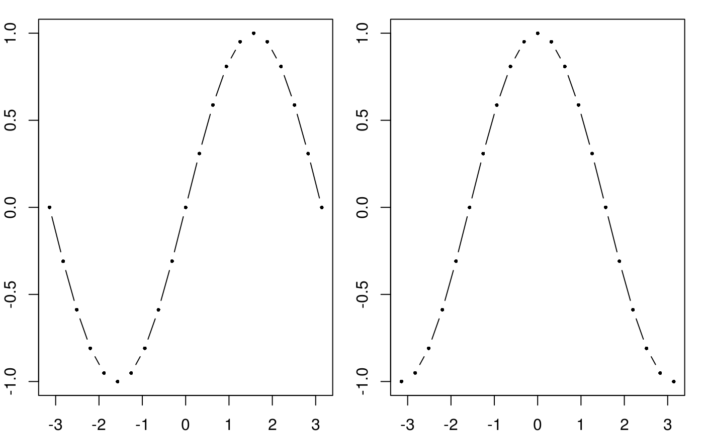
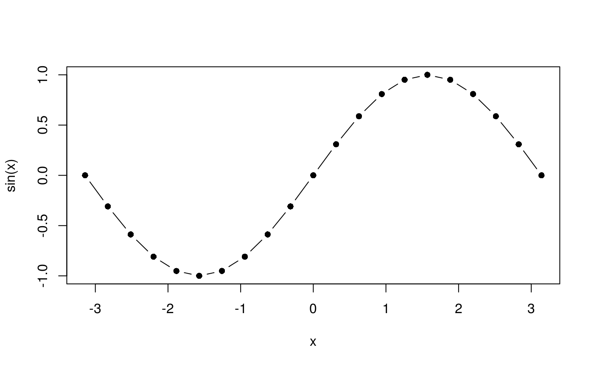

vignettes/functions_ungrouped.Rmd
functions_ungrouped.Rmdarglist()
Have you ever seen something like the following?
x <- seq(-pi, pi, pi/10)
par(mfrow = c(1, 2), mar = c(2, 2, 1, 1))
plot(x, sin(x), xlab = "x", ylab = "sin(x)", pch = 16, type = "b", cex = 0.5)
plot(x, cos(x), xlab = "x", ylab = "cos(x)", pch = 16, type = "b", cex = 0.5)
Do you spot the repetition? What if you want to change the plot character pch or the type of the plot or the character extension factor cex in both plots at the same time?
# Define common arguments
common <- list(x = x, pch = 16, xlab = "x", type = "b", cex = 0.5)
# Call the plot function with the common arguments, extended by
# call-specific arguments
par(mfrow = c(1, 2), mar = c(2, 2, 1, 1))
do.call(plot, kwb.utils::arglist(common, y = sin(x), ylab = "sin(x)"))
do.call(plot, kwb.utils::arglist(common, y = cos(x), ylab = "cos(x)"))The function arglist() merges the contents of one or more lists by allowing to overwrite existing list elements. In the above example, the list of common arguments is just extended. Elements in this list could also be overwritten, such as the argument cex in the following:
This pattern of calling a function with an extended argument list is so common that I wrote a function callWith() that allows to write the above shorter:

But this will be explained later…